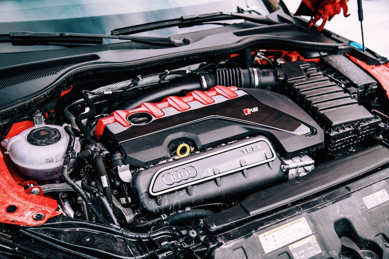

У "Ауди ТТ РС"-у није свакоме довољно фабричких 400 коња и бројке убрзања 0-100км/ч за 3,7 секунди, 100-200км/ч за 9,5 секунди па тако долази до преправки како би се извукло што више од аутомобила и добила што боља времена убрзања и већи број коњских снага.
Ковање мотора се подразумиевало па је 2,5-литраш добио коване клипове и клипњаче. Исто тако је добио и јаче опруге вентила. Постављена је и нова “мапа” за мотор и мењач немачког специјалисте "Унитроника", те већи турбо "ТТЕ777" немачке реномиране фирме "Турбо Енџинерс" специјализоване за производњу турбина.
Од додатака који одузимају дах ту је посебни "Милтек" издувни систем, као и 19-то инчне ултралаке фелне од кованог магнезијума од 9,7 кг са тркачким "Мишелин пилот спорт 4с" гумама, а петоцилиндични 2.5 турбо мотор има "Унитроников" карбонски усис пречника 100 мм и колено за турбину пречника 4 инча за већи проток издувних гасова, алуминијску усисну грану, "Вагнеров" довнпајп и сензор концентрације етанола.
Поред тога замењени су и интекулер и стављен је већи, како би мотор добијао што више хладне течности и тиме се ефикасније хладио.
Из Лас Вегаса из "Ироз Моторспорта" стигла је “кастом” пумпа за гориво, израђена по жељеним спецификацијама, а кад је посао завршен, резултати су показали да ТТРС на "Стејџ 3" подешавањима на мешавини 80% е85 (тркачко гориво) и 20% бензин постиже 800 КС и 850 Nm.
Најбоље време убрзања од 0 до 100 км/ч износи 2,55 секунди, а од 100 до 200 км/ч 3,94 секунде, док је ТТ РС 402 метра прешао за 9,6 секунди.
